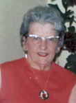
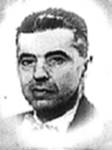
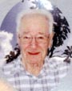

notre ancêtre de la 6ième génération
fiche familiale
 |
Eugène Henri décède à l'âge de 82 ans. Naissance le 14 avril 1877 à St-Malachie. Décès le 29 mars 1960 à Noranda. Funérailles: 2 avril 1960 à Notre-Dame-de-la-Protection de Rouyn-Noranda Sépulture au cimetière Notre-Dame. Forgeron, menuisier et cultivateur. En septembre 1919, durant la crise il est venu s'établir à Macamic. Puis en 1937, il construisit la maison et les bâtiments sur la ferme à Reneault au coin "Marouf", où il y demeura jusqu'en 1952, il s'installe alors dans une petite maison à Noranda-Nord. Parrain de Lisèle Beaudoin. Décédé à sa demeure. Père: Raymond Henri Mère: Marie Blais (sa famille) Mariage le 16 juillet 1901 à Ste-Rose-de-Watford Épouse: Graziella Provost décède à l'âge de 90 ans. Naissance le 26 avril 1883 à Ste-Germaine-Station, cté Dorchester Baptême 27 avril 1883 à Ste-Germaine-Station Baptisée Marie Ida Graziella, parrain son oncle Onésime Sylvain, marraine sa tante Florida Provost. Décès le 12 avril 1974 à Rouyn-Noranda Funérailles le 15 avril 1974 à St-Joseph de Rouyn-Noranda Sépulture au cimetière Notre-Dame. Marraine de Lisèle Beaudoin. Père: Louis-Firmin Provost Mère: Marie-Apolline Nolin (sa famille) |
Portrait de la famille d'Eugène Henri en 1947 à Reneault cté Abitibi

de gauche à droite à partir de la rangée arrière :
Berthe, Marie (dite "Mary"), Annette, Germaine, Laurette, Aline, Hélène et Claire
frère Roland, Eugène, Graziella Provost et Gérard
de gauche à droite à partir de la rangée arrière :
Berthe, Marie (dite "Mary"), Annette, Germaine, Laurette, Aline, Hélène et Claire
frère Roland, Eugène, Graziella Provost et Gérard
  |
Enfant 1 Berthe Henri décède à l'âge de 78 ans. Naissance le 31 mai 1903 à Ste-Rose-de-Watford Décès le 1 mars 1982 à Thetford Mines Mariage le 23 oct 1928 à St-Jean-L'Évangéliste de Macamic Conjoint: Louis-Ernest Ouellet n. en 1906 d. 25 septembre 1980. (sa famille) |
| Enfant 2 Laurence Henri décède à l'âge de 17 ans. Naissance le 21 avril 1905 à Ste-Rose-de-Watford Parrain et marraine ses grand'parents paternels, Raymond Henri et Marie Blais. Décès le 16 octobre 1922 à Macamic. Sépulture au cimetière de Macamic |
| |
Enfant 3 Marie Henri décède à l'âge de 85 ans. Naissance le 20 janvier 1907 à Ste-Rose-de-Watford Baptisée Marie, Ida, Clérine dite "Mary" Parrain son oncle Lorenzo Provost, marraine sa tante Félixine Doyon Décès le 18 janvier 1993 à Verdun Sépulture le 22 janvier 1993 au cimetière Notre-Dame des Neiges de Montréal. Occupation: Maîtresse d'école. Caissière. Marraine de André Beaudoin. |
|   |
Enfant 4 Annette Henri décède à l'âge de 69 ans. Naissance le 18 avril 1908 à Ste-Rose-de-Watford Décès le 26 août 1977 à Verdun Mariage le 23 octobre 1928 à St-Jean-L'Évangéliste de Macamic Conjoint: Wilfrid Laroche n. 28 décembre 1905 d. 9 décembre 1968. (sa famille) |
Enfant 5 Joseph-Hector Henri
décède à l'âge de 2 ans.
Naissance le 20 juillet 1910 à Ste-Rose-de-Watford
Parrain son oncle Adalbert Provost,
marraine sa tante Rose-Aimée L'Heureux.
Décès le 15 mars 1913 à Ste-Rose-de-Watford
Sépulture: au cimetière de Ste-Rose-de-Watford
-------------------------------------------------------------------------------
  |
Enfant 6 Gérard Henri décède à l'âge de 66 ans. Naissance le 6 février 1912 à Ste-Rose-de-Watford Décès le 17 octobre 1978 à Noranda. Mariage le 18 septembre 1946 à Notre-Dame-de-la-Protection de Rouyn-Noranda Conjointe: Marie-Ange-Annie Théberge n. 3 janvier 1918 d. 14 janvier 2002 (sa famille) |
  |
Enfant 7 Germaine Henri décède à l'âge de 95 ans. Naissance le 29 octobre 1913 à Ste-Rose-de-Watford Décède le 18 avril 2009 à Rouyn-Noranda Mariage le 14 mai 1936 à St-Albert le Grand de Duparquet. Conjoint: Antoine Beaudoin n. 18 avril 1913 d. 21 décembre 1997. (sa famille) |
  |
Enfant 8 Laurette Henri décède à l'âge de 89 ans. Naissance le 12 avril 1915 à Ste-Rose-de-Watford Décède le 21 juin 2004 à Val D'Or. Mariage le 30 mars 1937 à Macamic. Conjoint: Adrien Champagne n. 27 janvier 1914, d. 22 septembre 2003. (sa famille) |
| |
Enfant 9 Roland Henri décède à l'âge de 79 ans. Naissance le 18 mai 1917 à Ste-Rose-de-Watford Baptême le 18 mai 1917 à Ste-Rose de Ste-Rose-de-Watford Parrain son petit cousin Léon Boutin, marraine sa soeur Berthe. Décès le 20 mars 1997 à hôpital Hôtel-Dieu d'Arthabaska Funérailles le 24 mars 1997 à Victoriaville Sépulture au Cimetière de la résidence provinciale des Frères du Sacré-Coeur d'Arthabaska Frère Lionel du Sacré-Coeur Le 30 août 1931 à l'âge de 14 ans, il quitta ses parents à Macamic pour aller poursuivre ses études au Juvénat des Frères du Sacré-Coeur à Arthabaska. Il y demeura et prit l'habit de la communauté le 14 août 1932. Il fit sa première profession le 15 août de l'année suivante et sa profession perpétuelle le 4 août 1939, porta le nom de Frère Lionel. Il enseigna au Juvénat d'Arthabaska de 1935 à 1938, à Matane de 1938 à 1939, à Québec de 1939 à 1942, à Asbestos en 1942, à Sherbrooke de 1942 à 1951 et au collège de Victoriaville de 1951 à 1952. À l'été de 1952 fut nommé Directeur du collège du Sacré-Coeur de Princeville et par la suite directeur du CEGEP de Victoriaville. |
  |
Enfant 10 Aline Henri décède à l'âge de 79 ans. Naissance le 8 février 1920 à Macamic. Décès le 25 avril 1999 à Moose-Jaw, Ska. Mariage le 22 août 1942 à St-Sauveur de Val D'Or. Conjoint: Jacques Lussier n. 18 mai 1915 d. 30 mai 1980. (sa famille) |
  |
Enfant 11 Claire Henri décède à l'âge de 85 ans. Naissance le 4 juin 1921 à Macamic. Décès le 8 février 2007 à Rouyn-Noranda. Mariage le 26 juillet 1945 à Destor. Conjoint: Laval Bolduc n. 25 avril 1914 d. 17 mars 1993. (sa famille) |
   |
Enfant 12 Hélène Henri décède à l'âge de 66 ans. Naissance le 5 mai 1924 à Macamic. Décès le 29 novembre 1990 à Châteauguay. Mariage le 8 août 1946 à Destor. 1er conjoint: Onil Bergeron n. vers 1920 d. 12 janvier 1952 Père: Ovila Bergeron Mère: Emilia-Exilia Paquin Mariage le 5 septembre 1959 à Châteauguay. 2ème conjoint: Marc-Aurèle Birtz n. en 1912 d. en 1976 (sa famille) |